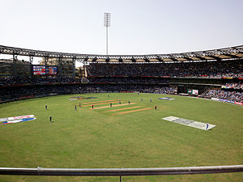

Cricket is a bat-and-ball game played between two teams of eleven players each on a cricket field,at the centre of which isa rectangular 20-metre (22-yard) pitch with a target at each end called the wicket (a set of three wooden stumps upon whichtwo bails sit). Each phase of play is called an innings, during which one team bats, attempting to score as many runs as possible,whilst their opponents bowl and field, attempting to minimise the number of runs scored. When each innings ends, the teams usually swap roles for the next innings (i.e. the team that previously batted will bowl/field, and vice versa). The teams each bat for one or two innings, depending on the type of match. The winning team is the one that scores the most runs, including any extras gained (except when the result is not a win/loss result).
Before a match begins, the two team captains meet on the pitch for the toss (of a coin), with the winner deciding which team willbat first. Two players from the batting side, and all eleven players from the bowling/fielding side, then enter the field, and play proceedsby a member of the fielding team, known as the bowler, delivering (i.e., bowling) the ball from one end of the pitch towards the wicket at the other end,which is guarded by one of the batsmen, known as the striker. The striker's role is to strike the ball well enough to score runs, if possible, while not being dismissed. The other batsman, known as the non-striker, waits at the opposite end of the pitch near the bowler. The bowling team's objectives are to prevent the scoring of runs and to dismiss the batsman. A dismissed batsman, who is declared to be "out", must leave the field to be replaced by a teammate.
The most common forms of dismissal are these: bowled, when the bowler hits the stumps directly with the ball and dislodges the bail(s); leg before wicket (lbw),when the batsman prevents the ball from hitting the stumps with his body instead of his bat; and caught, when the batsman hits the ball into the air and it is interceptedby a fielder before touching the ground.Runs are scored by two main methods: either by hitting the ball hard enough for it to cross the boundary, or by the two batsmen swapping ends by each simultaneously running the length of the pitch in opposite directions whilst the fielders are retrieving the ball.Adjudication is performed on the field by two umpires, aided by a Third umpire and Match referee in international matches. They communicate with two off-fieldscorers (one per team) who record all the match's statistical information including runs, dismissals, overs, etc.
There are various formats ranging from Twenty20, played over a few hours with each team batting for a single innings of 20 overs (i.e. 120 delivries), to Test matches,played over five days with unlimited overs and the teams each batting for two innings of unlimited length. Traditionally cricketers play in all-white kit, but in limited overs cricketthey wear club or team colours. In addition to the basic kit, some players wear protective gear to prevent injury caused by the ball, which is a hard, solid spheroid made ofcompressed leather with a slightly raised sewn seam enclosing a cork core which is layered with tightly wound string.Historically, cricket's origins are uncertain and the earliest definite reference is in south-east England in the middle of the 16th century. It spread globally with the expansionof the British Empire, leading to the first international matches in the second half of the 19th century. The game's governing body is the International Cricket Council (ICC),which has over 100 members, twelve of which are full members who play Test matches. The game's rules are held in a code called the Laws of Cricket which is owned and maintained by Marylebone Cricket Club (MCC) in London.
The sport is followed primarily in Australasia, the United Kingdom, Ireland, the Indian subcontinent, southern Africa and the West Indies. Women's cricket, which is organised andplayed separately, has also achieved international standard. The most successful side playing international cricket is Australia, having won seven One Day International trophies,including five World Cups, more than any other country, and having been the top-rated Test side more than any other country.